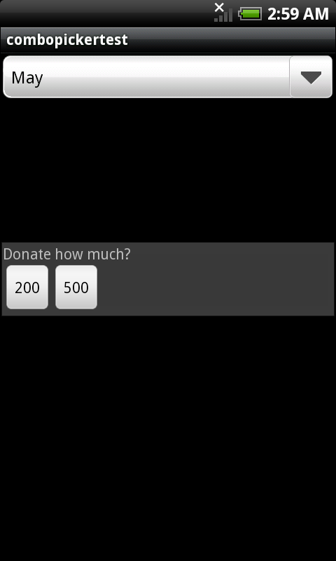

PopupWidget is a temporary widget displayed on the top of screen, the running application can use the widget to interact with users. Developers might design different popup widgets for various purposes.
PopupWidget is a widget carrier. Developers have to design their own widget and anchor to the target PopupWidget. For instance, developers would like to ask some donate from users and they design a widget for this purpose. The widget includes a text string and two buttons. Finally, the widget is anchored to a PopupWidget by calling setWidget().
FakeButton *mpBtn1 = new FakeButton(mpPage);
mpBtn1->setId(200);
mpBtn1->setText();
FakeButton *mpBtn2 = new FakeButton(mpPage);
mpBtn2->setId(500);
mpBtn2->setText();
gaia::ui::LinearController* pLCH = new gaia::ui::LinearController(static_cast<Page*>(mpPage));
pLCH->setOrientation(gaia::ui::LinearController::HORIZONTAL);
gaia::ui::LinearController* pLCV = new gaia::ui::LinearController(static_cast<Page*>(mpPage));
pLCH->setOrientation(gaia::ui::LinearController::VERTICAL);
pLCV->addWidget(mpBtn1);
pLCV->addWidget(mpBtn2);
mpTextWidget->setText("Donate how much?");
pLCH->addWidget(mpTextWidget);
pLCH->addWidget(pLCV);
mpPopupWidget->setWidget(pLCH);
Upon developers want to show the widget to users, just call showAtLocation() to bring it out.
showAtLocation() also allows developers to defined the displaying location.
mpPopupWidget->showAtLocation(pParent, Gravity::CENTER,0,0); //show in the screen center.
If running application got the response from users or it was timeout, call dismiss() to dismiss the PopupWidget from the screen.
if ( mpPopupWidget->isShowing() ){
mpPopupWidget->dismiss();
}